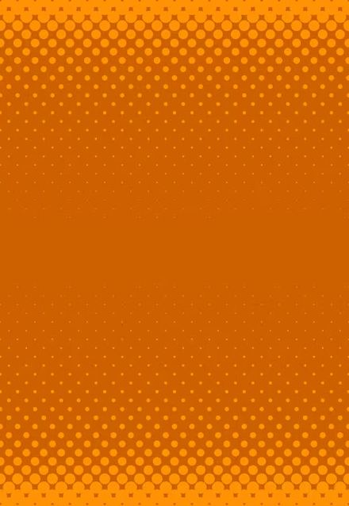
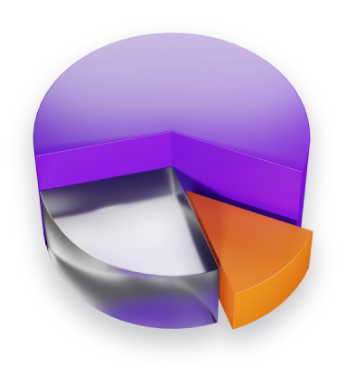

Draft · pending validation


Technical proposal · LRPS-2026-9207316
Agoo! Dial 5100, get the answer.
A campaign that puts AGOO's free information in every young person's pocket, designed with young Ghanaians and measured by calls, not impressions.

Draft · pending validation

01 · What we heard
A platform young Ghanaians already use.
2015
launched with Ghana Health Service and MTN Ghana
10M+
engagements on AGOO, per Viamo
5100
free short code on MTN; 054 011 8999 for other networks
6
widely spoken languages at launch
What you asked for
A creative agency to design and lead the implementation of a promotional campaign for the AGOO platform (full scope as defined in the RFP verify).
What success looks like
More young people, in every region and language, know AGOO, dial it and come back, and UNICEF can see which messages and channels drove the calls.
Sources: UNGM notice LRPS-2026-9207316 (published 13 Nov 2026, deadline 4 Dec 2026); UNICEF Innovation, "Agoo: An Interactive Mobile Platform"; Viamo, "UNICEF Agoo 5100 reaches 10 million engagements"; UNICEF Ghana stories on AGOO.
Draft · pending validation
02 · What the RFP really asks
What a campaign for AGOO has to get right.
1
Reach beyond smartphones
AGOO works on any phone, so the campaign must too: radio, outdoor, schools, SMS and community voices.
Offline-first media mix2
Speak youth, in local languages
Messages co-created with young people, in the languages AGOO serves.
Youth co-creation sessions3
Protect children
Every image and story follows UNICEF's child safeguarding and ethical reporting rules.
Safeguarding built in4
Drive calls, not likes
Success is measured in calls to 5100 and returning callers.
Tracked by channelTo confirm in discovery: eligibility for firms registered outside Ghana verify · media budget and who buys it verify · campaign regions, languages and dates verify
Draft · pending validation
03 · Our solution
Listen, create, launch, learn: a campaign young people shape.
Listen
Youth sessions and AGOO data to find what young people ask.

Create
Concept, key visual, radio and social assets in local languages.
Launch
Radio, outdoor, schools, SMS and creators, with local partners.

Learn
Calls by channel and region, fed back into the next wave.
Works on any phone Local languages Child safeguarding Measured in calls
Draft · pending validation
04 · Preliminary concept
"Agoo!" The knock that brings answers.
POSTER · BUS STOP
Agoo!
Got a question you can't ask out loud?
5100
Free on MTN · other networks 054 011 8999
Calling…
5100
AGOO
Press 1 · Your body
Press 2 · Staying safe
Press 3 · Your mind
Press 4 · Your language
RADIO SPOT · 30 S
SFX: knock, knock.
Youth 1: Agoo!
Youth 2: Amee! Come in.
Youth 1: I need to ask something, but not out loud…
Voice: AGOO answers. Free, private, in your language. Dial 5100 on MTN.
TwiEweDagbaniEnglish+ AGOO languages
Preliminary concept prepared for this proposal, not official UNICEF or AGOO material. Final creative is co-created with young people, tested in each language and approved by UNICEF; menu options and languages are illustrative.
Draft · pending validation
05 · Brand presence
Creative people want to look at.
Concept brands created by TWO&HUMAN to show our art direction and standard of execution. Fictional brands, not client projects.
Draft · pending validation

06 · Scope and deliverables
Design it, then lead it on the ground.
Insight
Desk review, AGOO data and youth co-creation sessions.
Insight briefConcept
Campaign idea, key visual and taglines tested with young people.
Concept approvalProduction
Radio spots, posters, social, SMS and school kits in local languages.
Asset libraryLaunch
Media and activation plan with local partners approved by UNICEF.
Launch planLead implementation
Weekly coordination, creator partnerships and content calendar.
Weekly reportsEvaluation
Calls by channel and region, lessons and a next-wave plan.
Final reportAssumptions that protect your budget: media buying, printing and field activations paid at cost through partners approved by UNICEF verify · translations by native speakers · two revision rounds per deliverable · safeguarding consent for every participant.
Draft · pending validation

07 · Timeline and success measures
Insight in week 3, on air by week 8.
Weeks 1–3
Insight
- Desk review and AGOO data
- Youth co-creation sessions
- Insight brief
Weeks 4–6
Concept and production
- Concept tested with youth
- Key visual and scripts
- Asset library
Weeks 7–8
Launch
- Media and partners booked
- Launch wave
- Daily monitoring
Weeks 9–16
Run, learn, report
- Weekly optimization
- Mid-term review
- Final report
Schedule aligned to the RFP once confirmed verify. Ghana is 3 hours ahead of Argentina; we cover the full Accra morning.
Calls to 5100 and the long number Returning callers Reach by region and language Cost per call by channel
Draft · pending validation
08 · Team and the questions you should ask
Founder-led, and ready for hard questions.
Julio Briones
Co-founder · Team leader and creative strategy
Single point of contact. Leads strategy, concept and campaign management; coordinates deliverables and QA for international marketing clients.
Mariam Neme
Co-founder · Software engineer
Leads data and measurement: call tracking by channel, dashboards and the digital assets.
Established 2026 · Tucumán, Argentina · remote, in English and Spanish · founder-led: the people in this proposal do the work.
Can a team outside Ghana lead this?
Strategy, creative and campaign management run remotely; field production and activations go through Ghanaian partners approved by UNICEF verify.
How do you keep children safe?
Consent, safeguarding and ethical reporting rules apply to every session, photo and story, and UNICEF approves each asset.
How will we know it worked?
Calls and returning callers by channel and region, reported weekly, not just reach.
Who owns the creative?
UNICEF, per its General Terms and Conditions verify.
Draft · pending validation

09 · Compliance and next steps
Ready to make AGOO the number everyone knows.
Campaign designYes
Lead implementationYes · with local partners
Creative productionYes
Monitoring and reportingYes
Child safeguardingYes
Financial proposalSeparate file
Eligibility, firms outside GhanaTo confirm verify
Forms and registrationAs required verify
1 · Submission
As instructed in the RFP, before 4 Dec 2026.
2 · Clarifications
We answer any question in writing.
3 · Insight
Youth sessions start in week 1.
Julio Briones · julio@twoandhuman.com · +54 381 509 8972 · twoandhuman.com